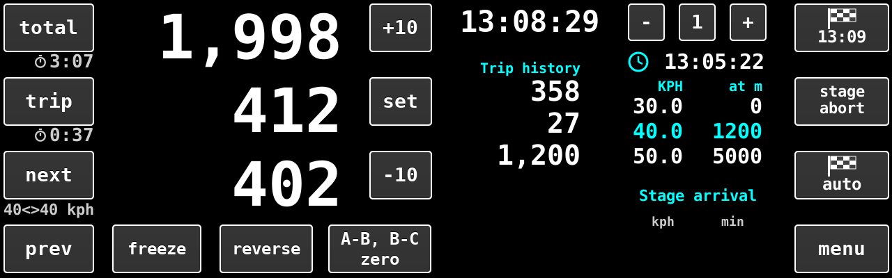
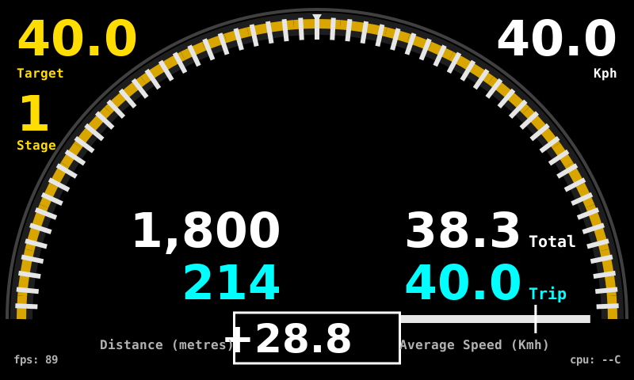
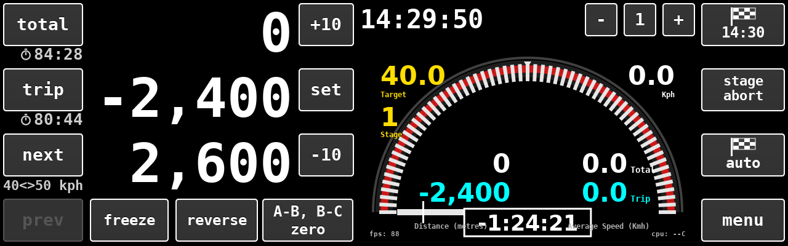
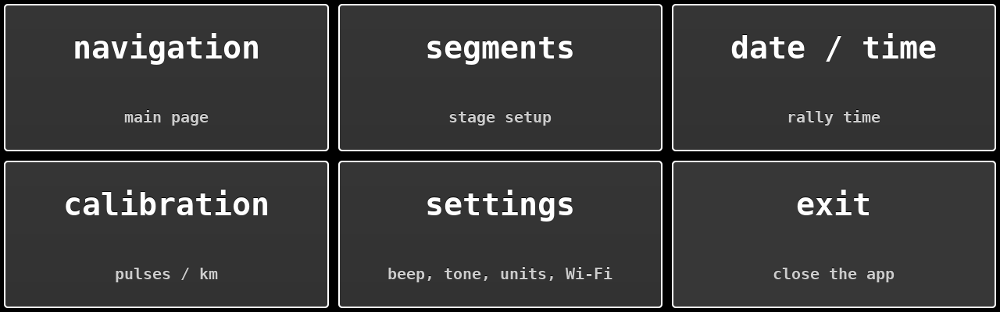
Every page has a menu key, always directly under the keypad (on
the navigation page it is the bottom key of the right-hand column). Press it to
reach the menu, then press the page you want. navigation returns
to the main page.
Numbers are typed on the on-screen keypad: tap a box, then use the keys.
C clears the box and the arrow key deletes one character. The box
has no Enter key, so an entry is saved when you tap another box or leave it
alone for a second.
Speeds are shown in kph or mph, as chosen under settings (speeds in the
stage table and the small 40<>50 kph line follow the choice).
The stage setup entries are always kph.
Shows the distance and elapsed time since the start. Pressing it resets the distance to zero.
An intermediate distance and time. Pressing it resets Trip, and the figure it
showed is added to the Trip history column. Trip also restarts by itself
at each speed change, whether the box makes it or next does, so it
reads the distance driven in the present leg. prev puts Trip back
to what it read before the change.
The next figure is the distance still to run before the speed
changes; below the key, 40<>50 kph shows the present speed and
the speed it changes to. --- means there is no further change or no
stage is running.
Press next at the speed change when the stage is not set to
change by itself, or to move on early. What this section gives up is handed to
the next, so the following change point stays where the roadbook puts it. If
you press it after the next leg's whole length has gone (a missed change point),
there is nothing left to take: the stage simply runs long and later change points
move out. next works only during a stage, and does nothing after the
last speed change. prev undoes the last speed change (whether the crew or the box made
it); it is grey when there is nothing to undo.
Correct the measured distance. +10 and -10 move
Total and Trip by ten metres a press. set opens a box to type the
exact Total figure (Trip is not affected). Corrections during a stage re-work
the average speeds and the timing error.
freeze holds the Total, Trip and next figures and the Trip
history while it is lit, so they can be read or copied; the clock and the stage
panel carry on. Freeze is shared: pressing it on the box or on a phone holds
the box and every phone together, and pressing it on either releases both. reverse makes Total,
Trip and next count down while the car backs up; speed is unaffected. While
either is lit the box repeats a low tone as a reminder.
Moves the driver's needle back to zero when the driver is deliberately aiming at an error (see driver zero).
The three flag keys at the right start the stage; the loaded stage is locked while it runs.
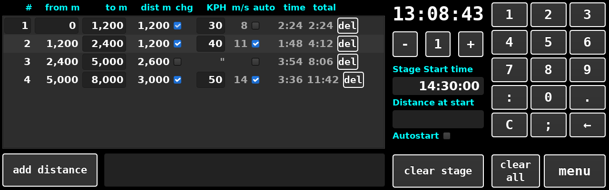
Stages are kept in five memories, chosen with − 1 + under the clock. Everything typed is saved to the stage on show about a second after you stop typing. A stage cannot be edited while it is running.
add distance and type the distance at which
each leg ends, as a roadbook total, separated by semicolons, for example
1200;2400;5000;8000. Each must be larger than the one before.add distance; the rows appear in the table.chg on each row where the speed changes and type the new
speed in the KPH box. A row without a tick carries the speed on
(shown as ").auto to have the box move to the next speed by itself at
the end of that row; leave it clear to press next. The box is only
available where there is a speed change.The first row's # and from m can be typed over to
match the roadbook; changing from m moves every row's
from m and to m together without changing any leg's
length. A to m figure can be corrected in place: the boundary moves
and the next row takes up the difference, so later rows do not move. It must stay
past that row's start and short of the next row's end; on the last row it simply
lengthens or shortens the stage. The table also shows each leg's length, the
speed in m/s, the time and the running total time. del removes a row
and hands its length to the row above; deleting the first row moves
from m up by its length instead.
clear stage empties this stage; clear all empties
every stage. Both ask first.The to m figures double as the roadbook boxes for Beep Assist, so
nothing more needs entering. Switch the beeps on under settings.
Navigation gives a double beep a set number of metres before each box. Timing
gives a single beep when the car should be passing it, and shows up distance
errors from wheel spin, corner cutting or a skipping sensor. The beeps follow the
Total reading, which is zero at the start of the stage, so a correction made with
+10, -10 or set moves every beep with it.
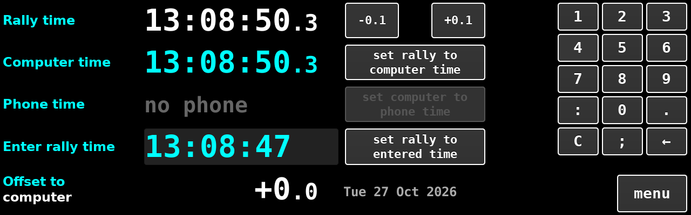
The Rally time (white) is the clock every stage is timed against. The
Computer time (cyan) is the Raspberry Pi's own clock. Phone time
is the linked phone's clock, or no phone. Offset to computer
is how far the rally clock is ahead (+) or behind (−) the computer; it is
shown as +2.3, or -11:49.2 once beyond a minute.
set rally to computer time makes the two the same.hh:mm:ss
(or hh:mm), then press set rally to entered time.
Today's date is used. Do not enter tenths.set computer to phone time sets the Pi's clock from the phone
while keeping the rally clock where it is. It is grey until a phone is
connected. It needs the Pi's usual permission to set its clock without a
password; if it cannot, the box says The computer clock could not be
set and nothing changes.-0.1 and +0.1 adjust the rally clock a tenth of a
second at a time. Hold to repeat. Each press is saved at once.
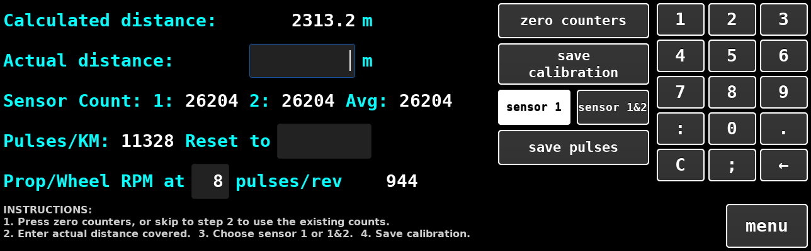
zero counters, or skip this step to use the distance
counted since the last Total reset.sensor 1 or sensor 1&2 to choose which
counter is used; the choice is shown in white.save calibration.The page shows the calculated distance, each sensor's count and the pulses per
kilometre now in use. If the actual distance is outside the range, or nothing has
been counted, save calibration does nothing and gives no message, so
check that the pulses per kilometre figure has changed.
If the figure is already known, type it into the Reset to box and press
save pulses. No driving is needed. Zero or less is ignored.
The last row shows propshaft or wheel revolutions per minute from sensor 1. Type the pulses the sensor gives per revolution into the small box for it to read correctly.
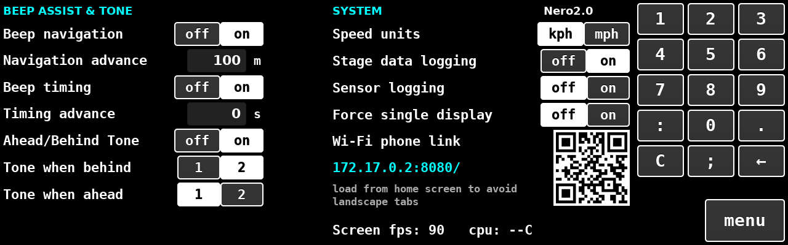
Each switch shows its present state lit. Changes are saved at once.
The gauge shows the Target speed (yellow) and the stage number at top left, the present speed at top right, and the ahead/behind needle with the error in seconds in the box beneath it. Total and Trip distance, and their average speeds, are at the foot.
While an autostart is pending a T- hh:mm:ss box appears in the
middle of the display, counting down to the start, with Early Departure
ENABLED or DISABLED beneath it. A start on the next minute shows it
all the way; a start set for later shows it only for the last five minutes. With
early departure enabled the error and the average speeds are held at zero until
the minute arrives, when the box disappears and the clock starts.
The A-B, B-C zero key rebases the needle when the driver is
aiming at an error other than zero. The popup shows the error to be taken off and
the adjustment already in force.
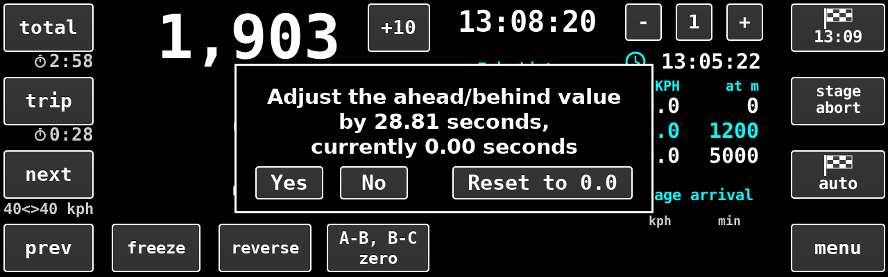
Yes zeroes the needle at this instant.Reset to 0.0 removes the adjustment so the true error shows.No changes nothing.Only the driver's gauge changes; distances, schedule and clock are untouched. Starting a stage clears the adjustment.
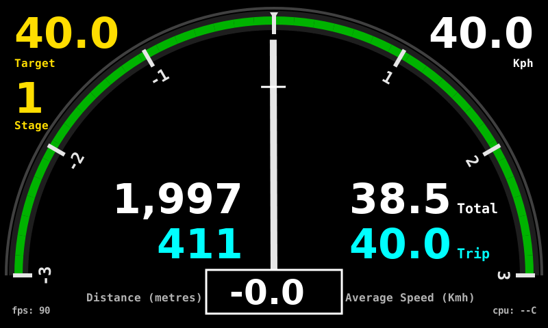
With Force single display on, the driver's gauge shares the co-pilot
screen and there is only one screen. The keys work as described for the
navigation page. The layout is: the Total / Trip / next block with
+10, set and -10 on the left, with
prev, freeze, reverse and
A-B, B-C zero along the foot; the rally clock and the
− 1 + stage selector above the gauge in the middle; and the three
flag keys and menu in a column on the right. There is no Trip
history or stage table on this screen; segments, date / time and calibration are
reached through menu, as on two displays. While a start is pending,
the countdown box appears over the gauge.
Connecting: tether the rally box to the phone over Wi-Fi, then open the address shown on the settings page (or scan its QR code). The top of the page reads connected in green when linked. Adding the page to the phone's home screen runs it full screen.
Sounds: the top key reads Tap for sound until the phone's audio is allowed; afterwards it toggles Sound is on / Sound is off.
Six tabs mirror the box: Navi (navigation, including total, trip,
freeze, reverse, the three flag keys and A-B, B-C zero), Seg (segments),
Time (date / time), Cal (calibration), Set (settings, plus
download logs) and Drv (the driver gauge with Total and Trip).
On Navi and Drv, press Total or Trip to reset them.
Navi
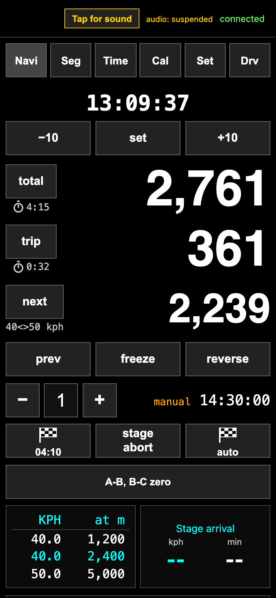
Drv
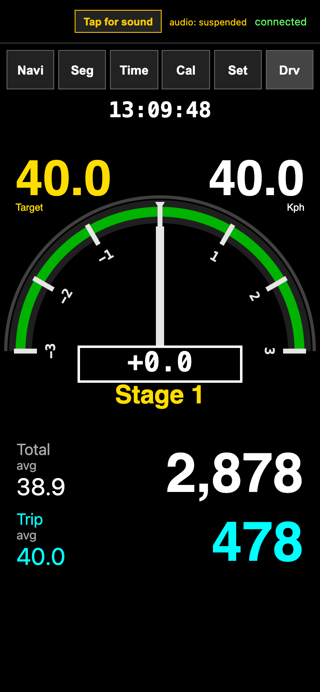
Seg
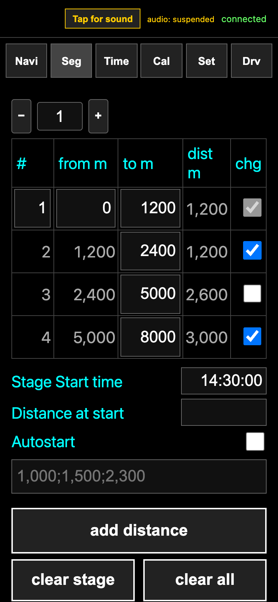
Set
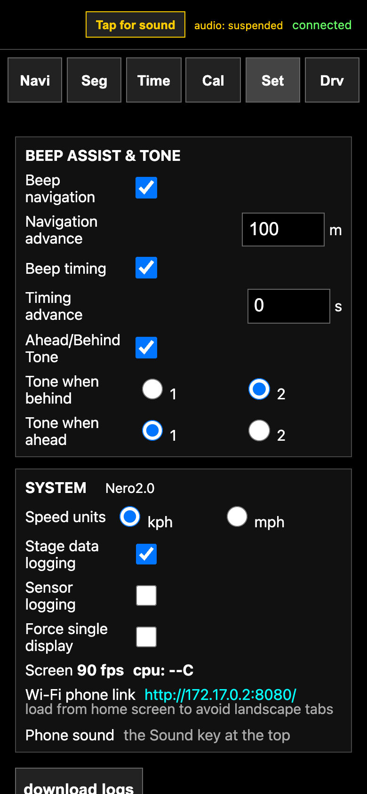
Time
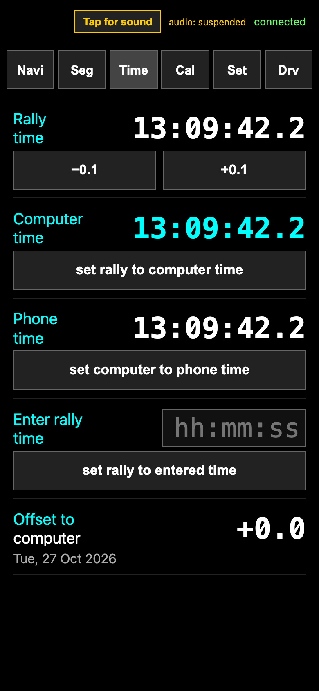
Cal
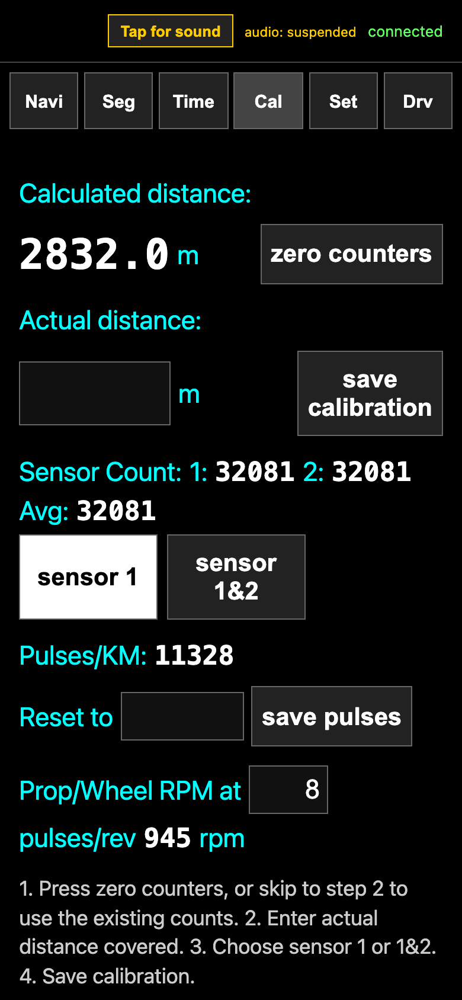